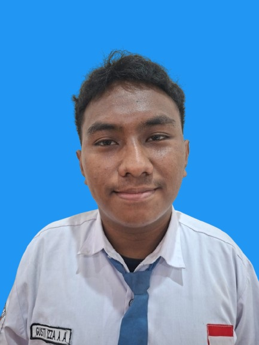

Website Sekolah Modern
Website profil sekolah dengan tampilan modern, informasi akademik, dan galeri kegiatan yang responsif.
👋 Halo, perkenalkan saya
Siswa SMK Krian 1 | Rekayasa Perangkat Lunak
Junior Web Developer & Siswa RPL
Siswa SMK Krian 1 Sidoarjo jurusan Rekayasa Perangkat Lunak (RPL) dengan minat pada pengembangan website dan desain antarmuka pengguna. Terus belajar dan mengasah kemampuan melalui project serta pengalaman Praktik Kerja Lapangan (PKL).

Tentang Saya
Saya merupakan siswa SMK Krian 1 Sidoarjo jurusan Rekayasa Perangkat Lunak (RPL) yang memiliki minat dalam bidang teknologi informasi, khususnya pengembangan website dan desain antarmuka pengguna.
Saya terus mengembangkan kemampuan teknis melalui proses pembelajaran, pengerjaan berbagai project, serta pengalaman Praktik Kerja Lapangan (PKL). Saya memiliki semangat untuk mempelajari teknologi baru dan meningkatkan kemampuan di bidang pengembangan perangkat lunak.
Rekayasa Perangkat Lunak
SMK Krian 1 Sidoarjo
Mempelajari pemrograman web, basis data, algoritma, serta praktik langsung melalui proyek dan Praktik Kerja Lapangan (PKL).
Keahlian
Kemampuan yang sedang terus saya pelajari dan asah.
Menyusun struktur halaman web menggunakan HTML semantik.
Mendesain tampilan responsif dan animasi sederhana.
Menambahkan interaksi dasar dan logika pada halaman web.
Membuat logika sisi server untuk aplikasi web sederhana.
Merancang dan mengelola basis data relasional dasar.
Merancang antarmuka yang sederhana, rapi, dan mudah digunakan.
Menyesuaikan tampilan website pada berbagai ukuran layar.
Mengelola versi kode dan menyimpan project secara terstruktur.
Portofolio
Beberapa project yang telah saya kerjakan untuk mengasah kemampuan.
Website profil sekolah dengan tampilan modern, informasi akademik, dan galeri kegiatan yang responsif.
Aplikasi kasir sederhana untuk mencatat transaksi penjualan dan mengelola data barang.
Landing page dengan layout modern, animasi scroll yang halus, dan tampilan yang menarik.
Dashboard cuaca yang menampilkan suhu, kelembapan, dan prakiraan cuaca menggunakan API.
Sistem pemantauan ketinggian dan kualitas air secara real-time menggunakan sensor dan mikrokontroler.
Pengalaman
Bagian Administrasi & Pendaftaran
Selama PKL, saya membantu proses administrasi dan pendaftaran pasien, mengelola dan memeriksa data, serta membantu proses pelayanan administrasi. Saya juga belajar berkomunikasi dengan lingkungan kerja, bekerja sama dengan tim, dan memahami alur kerja administrasi pelayanan kesehatan.
Terus Belajar
Aktivitas belajar yang sedang saya jalani untuk mengembangkan kemampuan.
Mempelajari pengembangan website
Mempelajari HTML, CSS, dan JavaScript
Mempelajari PHP dan MySQL
Mengerjakan project untuk meningkatkan kemampuan pemrograman
Mempelajari UI/UX Design
Mengembangkan kemampuan melalui tugas dan project sekolah
Terus mempelajari teknologi baru di bidang IT
Pencapaian
Belum ada sertifikat yang ditampilkan. Section ini akan diperbarui seiring dengan bertambahnya pengalaman dan sertifikasi.
[Nama Sertifikat]
[Penyelenggara — Tahun][Nama Sertifikat]
[Penyelenggara — Tahun][Nama Sertifikat]
[Penyelenggara — Tahun]Hubungi Saya
Punya pertanyaan, ide kolaborasi, atau ingin sekadar menyapa? Kirim pesan melalui form di bawah.